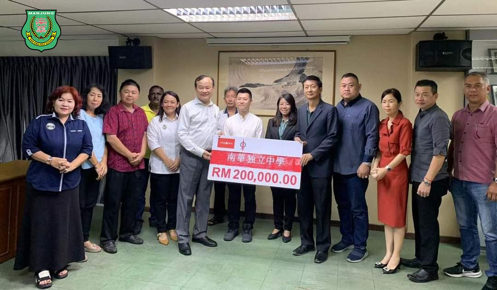
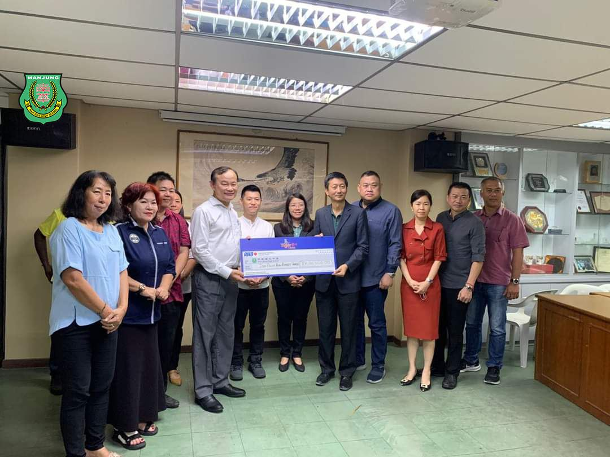
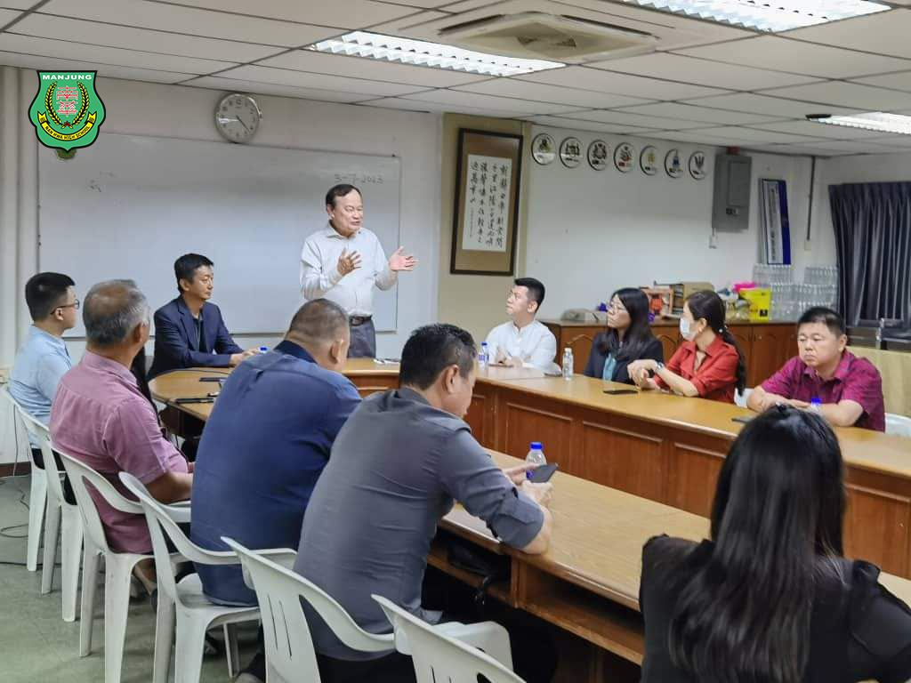
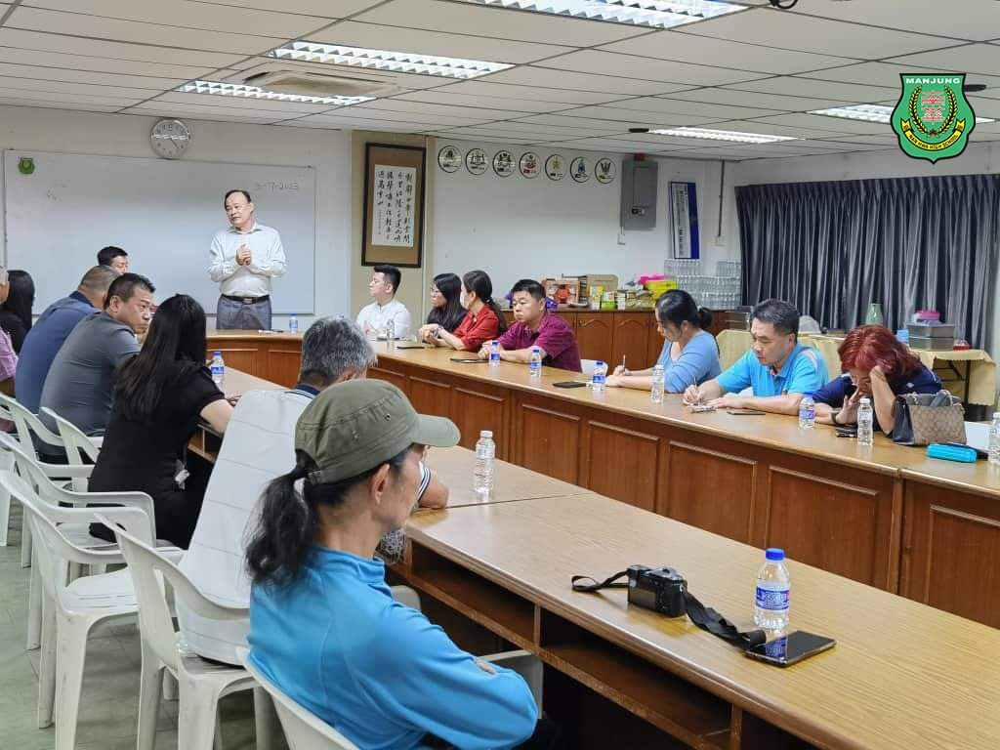
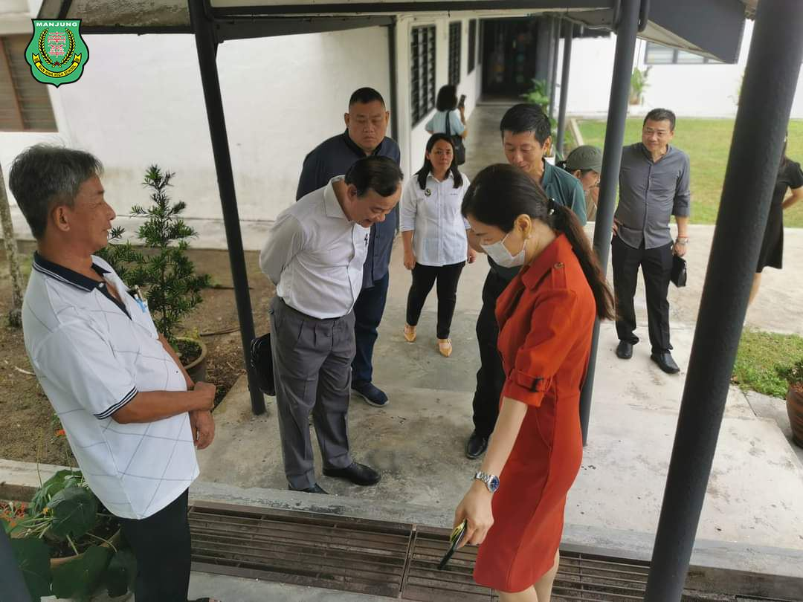
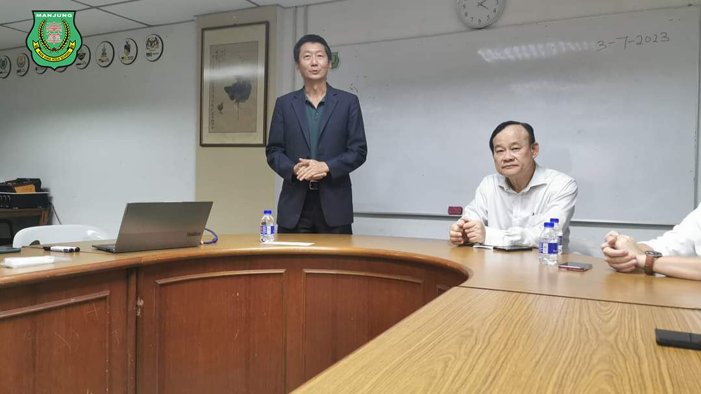

霹州政府拨二十万大红包予南华独中，同时木威国会议员拿督倪可汉也捐助两万令吉以响应
霹州政府拨二十万大红包予南华独中，同时木威国会议员拿督倪可汉也捐助两万令吉以响应南华独中于9月30日在爱大华古田会馆举办的“Tiger星洲华教义演”筹款活动，再次证明了团结政府与华社并肩捍卫华教，以行动证明政府的开明施政和捍卫国家多源流学校的决心。
#霹州政府 #木威国会议员 #拿督倪可汉
#Tiger华教星洲义演 #筹款活动 #华教 #多源流学校
#南华独中 #曼绒 #实兆远





